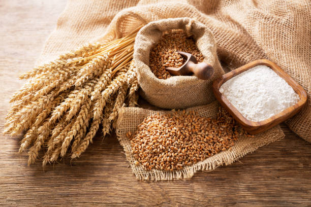

Rice is typically grown in the wet season or summer season, depending on the specific variety and regional climate. In tropical areas, it's often planted during the rainy season.The market share of rice varies widely by region. Countries like China, India, Indonesia, Bangladesh, and Vietnam are major producers and consumers of rice. In India, for example, states like West Bengal, Uttar Pradesh, and Punjab are among the top rice-producing regions.
Rice grows best in loamy soils that retain water well but are also well-draining. It thrives in soil that is slightly acidic to neutral (pH 5.5 to 7). Clayey soils with good water retention are also suitable for rice cultivation.Rice cultivation requires a significant amount of water, especially during the growing season. It also requires proper land preparation, including leveling and flooding for paddy fields. Depending on the method (traditional or modern), resources such as seeds, fertilizers, and machinery for planting and harvesting are needed. The exact time and resources depend on factors like the variety of rice, farming practices, and local conditions.
Rice contains various vitamins and minerals, although the exact amounts depend on the type of rice and processing methods. Brown rice is richer in vitamins and minerals such as B vitamins (thiamine, niacin, and riboflavin), magnesium, phosphorus, and selenium compared to white rice.
चावल आमतौर पर गीले मौसम या गर्मी के मौसम में उगाया जाता है, जो विशिष्ट किस्म और क्षेत्रीय जलवायु पर निर्भर करता है। उष्णकटिबंधीय क्षेत्रों में, इसे अक्सर बरसात के मौसम में लगाया जाता है। चावल की बाजार हिस्सेदारी क्षेत्र के अनुसार व्यापक रूप से भिन्न होती है। चीन, भारत, इंडोनेशिया, बांग्लादेश और वियतनाम जैसे देश चावल के प्रमुख उत्पादक और उपभोक्ता हैं। उदाहरण के लिए, भारत में पश्चिम बंगाल, उत्तर प्रदेश और पंजाब जैसे राज्य शीर्ष चावल उत्पादक क्षेत्रों में से हैं।
चावल दोमट मिट्टी में सबसे अच्छा उगता है जो पानी को अच्छी तरह से बरकरार रखती है लेकिन अच्छी जल निकासी वाली भी होती है। यह उस मिट्टी में पनपता है जो थोड़ी अम्लीय से तटस्थ (पीएच 5.5 से 7) होती है। अच्छी जल धारण क्षमता वाली चिकनी मिट्टी भी चावल की खेती के लिए उपयुक्त होती है। चावल की खेती के लिए काफी मात्रा में पानी की आवश्यकता होती है, खासकर बढ़ते मौसम के दौरान। इसमें धान के खेतों के लिए समतलीकरण और बाढ़ सहित भूमि की उचित तैयारी की भी आवश्यकता होती है। विधि (पारंपरिक या आधुनिक) के आधार पर, रोपण और कटाई के लिए बीज, उर्वरक और मशीनरी जैसे संसाधनों की आवश्यकता होती है। सटीक समय और संसाधन चावल की विविधता, खेती के तरीकों और स्थानीय परिस्थितियों जैसे कारकों पर निर्भर करते हैं।
चावल में विभिन्न विटामिन और खनिज होते हैं, हालांकि सटीक मात्रा चावल के प्रकार और प्रसंस्करण विधियों पर निर्भर करती है। सफेद चावल की तुलना में ब्राउन चावल विटामिन बी (थियामिन, नियासिन और राइबोफ्लेविन), मैग्नीशियम, फास्फोरस और सेलेनियम जैसे विटामिन और खनिजों से भरपूर होता है।
2. WHEAT / 2.गेहूं

Wheat is primarily grown in the winter season, known as the "winter wheat" season, in many regions. However, it can also be grown in the spring season, known as "spring wheat." The specific season depends on the climate and variety of wheat being cultivated.The market share and cultivation of wheat vary by country and region. Major wheat-producing countries include China, India, Russia, the United States, Canada, and countries in Europe. In India, states like Uttar Pradesh, Punjab, and Madhya Pradesh are among the top wheat-producing regions.
Wheat thrives in well-drained loamy soils with good water-holding capacity. It prefers soil with a neutral to slightly acidic pH (around 6.0 to 7.5). Sandy loam and loamy soils are considered ideal for wheat cultivation as they provide good aeration and water retention while allowing for root development.The time and resources needed for wheat cultivation depend on factors like the variety of wheat, climate, soil conditions, and farming practices. Generally, wheat requires moderate to high levels of nutrients, especially nitrogen, phosphorus, and potassium. It also needs sufficient water during critical growth stages. The time from planting to harvest varies but is typically around 90 to 150 days depending on the variety and growing conditions.
Wheat contains various vitamins, including B vitamins such as thiamine (B1), riboflavin (B2), niacin (B3), and folate (B9). These vitamins play crucial roles in energy metabolism, red blood cell production, and overall health.
गेहूं मुख्य रूप से सर्दियों के मौसम में उगाया जाता है, जिसे कई क्षेत्रों में "शीतकालीन गेहूं" मौसम के रूप में जाना जाता है। हालाँकि, इसे वसंत ऋतु में भी उगाया जा सकता है, जिसे "वसंत गेहूं" के रूप में जाना जाता है। विशिष्ट मौसम जलवायु और खेती की जाने वाली गेहूं की विविधता पर निर्भर करता है। गेहूं की बाजार हिस्सेदारी और खेती देश और क्षेत्र के अनुसार अलग-अलग होती है। प्रमुख गेहूं उत्पादक देशों में चीन, भारत, रूस, संयुक्त राज्य अमेरिका, कनाडा और यूरोप के देश शामिल हैं। भारत में, उत्तर प्रदेश, पंजाब और मध्य प्रदेश जैसे राज्य शीर्ष गेहूं उत्पादक क्षेत्रों में से हैं।
गेहूँ अच्छी जल-धारण क्षमता वाली अच्छी जल निकास वाली दोमट मिट्टी में पनपता है। यह तटस्थ से थोड़ा अम्लीय पीएच (लगभग 6.0 से 7.5) वाली मिट्टी को प्राथमिकता देता है। रेतीली दोमट और दोमट मिट्टी को गेहूं की खेती के लिए आदर्श माना जाता है क्योंकि वे जड़ों के विकास के लिए अच्छा वातायन और जल धारण प्रदान करते हैं। गेहूं की खेती के लिए आवश्यक समय और संसाधन गेहूं की विविधता, जलवायु, मिट्टी की स्थिति और खेती के तरीकों जैसे कारकों पर निर्भर करते हैं। . आम तौर पर, गेहूं को मध्यम से उच्च स्तर के पोषक तत्वों, विशेष रूप से नाइट्रोजन, फास्फोरस और पोटेशियम की आवश्यकता होती है। विकास के महत्वपूर्ण चरणों के दौरान इसे पर्याप्त पानी की भी आवश्यकता होती है। रोपण से लेकर कटाई तक का समय अलग-अलग होता है, लेकिन आमतौर पर किस्म और बढ़ती परिस्थितियों के आधार पर लगभग 90 से 150 दिन का होता है।
गेहूं में विभिन्न विटामिन होते हैं, जिनमें बी विटामिन जैसे थायमिन (बी1), राइबोफ्लेविन (बी2), नियासिन (बी3), और फोलेट (बी9) शामिल हैं। ये विटामिन ऊर्जा चयापचय, लाल रक्त कोशिका उत्पादन और समग्र स्वास्थ्य में महत्वपूर्ण भूमिका निभाते हैं।
3. JUTE / 3.जूट
Jute is typically grown during the monsoon season. Sowing generally starts in March-April, and harvesting occurs around July-September.West Bengal is the largest producer, accounting for the majority of India's jute cultivation.
Other significant states include Bihar, Assam, and Odisha.Jute requires alluvial soil, which is rich in organic matter.
The soil should be well-drained with a pH range of 6.0 to 7.5.Areas with sandy loam or clay loam soils are also suitable for jute cultivation.Jute takes about 4-5 months from sowing to harvesting.
जूट आमतौर पर मानसून के मौसम में उगाया जाता है। बुआई आम तौर पर मार्च-अप्रैल में शुरू होती है, और कटाई जुलाई-सितंबर के आसपास होती है। पश्चिम बंगाल सबसे बड़ा उत्पादक है, जो भारत की अधिकांश जूट खेती के लिए जिम्मेदार है।
अन्य महत्वपूर्ण राज्यों में बिहार, असम और ओडिशा शामिल हैं। जूट के लिए जलोढ़ मिट्टी की आवश्यकता होती है, जो कार्बनिक पदार्थों से समृद्ध होती है।
मिट्टी को 6.0 से 7.5 के पीएच रेंज के साथ अच्छी तरह से सूखा होना चाहिए। रेतीली दोमट या चिकनी दोमट मिट्टी वाले क्षेत्र भी जूट की खेती के लिए उपयुक्त हैं। जूट की बुआई से लेकर कटाई तक लगभग 4-5 महीने लगते हैं।
4. OILSEEDS / 4.तिलहन

Oilseeds include a variety of crops such as soybean, sunflower, groundnut (peanut), sesame, mustard, and safflower. Sowing in June-July, harvesting in September-October.
India is a significant producer, but much of the production is consumed domestically. Madhya Pradesh (largest producer), Maharashtra, Rajasthan, Andhra Pradesh, Karnataka.Well-drained loamy to clayey soils with good organic content. pH range: 6.0 to 7.5.
90-120 days from sowing to harvesting.Quality seeds, moderate irrigation, fertilizers (NPK), pest and disease management.
तिलहनों में विभिन्न प्रकार की फसलें शामिल हैं जैसे सोयाबीन, सूरजमुखी, मूंगफली, तिल, सरसों और कुसुम। जून-जुलाई में बुआई, सितम्बर-अक्टूबर में कटाई।
भारत एक महत्वपूर्ण उत्पादक है, लेकिन अधिकांश उत्पादन घरेलू स्तर पर खपत होता है। मध्य प्रदेश (सबसे बड़ा उत्पादक), महाराष्ट्र, राजस्थान, आंध्र प्रदेश, कर्नाटक। अच्छी कार्बनिक सामग्री वाली अच्छी जल निकास वाली दोमट से चिकनी मिट्टी। पीएच रेंज: 6.0 से 7.5.
बुआई से कटाई तक 90-120 दिन। गुणवत्तापूर्ण बीज, मध्यम सिंचाई, उर्वरक (एनपीके), कीट और रोग प्रबंधन।
5. POTATOES / 5.आलू
Sowing in June-July, harvesting in September-October.India is one of the largest producers of potatoes globally. Much of the production is consumed domestically, with a growing export market.Uttar Pradesh (largest producer),West Bengal,Bihar,Punjab,Gujarat
Well-drained sandy loam to loamy soils are ideal.The soil should be rich in organic matter with good aeration and a pH range of 5.0 to 6.5.90-120 days from planting to harvesting, depending on the variety and growing conditions.
जून-जुलाई में बुआई, सितंबर-अक्टूबर में कटाई। भारत विश्व स्तर पर आलू के सबसे बड़े उत्पादकों में से एक है। बढ़ते निर्यात बाजार के साथ, अधिकांश उत्पादन घरेलू स्तर पर खपत होता है। उत्तर प्रदेश (सबसे बड़ा उत्पादक), पश्चिम बंगाल, बिहार, पंजाब, गुजरात
अच्छी जल निकास वाली बलुई दोमट से दोमट मिट्टी आदर्श होती है। किस्म और बढ़ती परिस्थितियों के आधार पर मिट्टी अच्छे वातायन के साथ कार्बनिक पदार्थों से समृद्ध होनी चाहिए और रोपण से लेकर कटाई तक पीएच रेंज 5.0 से 6.5.90-120 दिनों की होनी चाहिए।
6. SUGARCANE / 6.गन्ना


Sugarcane is a tropical and subtropical crop that is typically grown in regions with a long and warm growing season. It is generally planted at the beginning of the wet season or during the spring months, as sugarcane requires ample moisture for initial growth. The exact timing can vary depending on the specific location and climate conditions.
Sugarcane grows best in well-drained, fertile soils with good moisture retention. It can thrive in a variety of soil types, including sandy loam, clay loam, and organic-rich soils. However, it prefers soils with good drainage to prevent waterlogging, which can inhibit root growth and lead to disease issues. Additionally, sugarcane requires a soil pH between 5.5 and 8.0 for optimal growth.
Sugarcane is a relatively labor-intensive crop that requires significant time and resources for cultivation, especially during planting and harvesting. The time from planting to harvest typically ranges from 12 to 18 months, depending on the variety and growing conditions. Sugarcane also requires regular irrigation, fertilization, and weed control throughout its growth cycle. Harvesting is typically done mechanically, but it still requires skilled labor and specialized equipment. Additionally, sugarcane cultivation may require inputs such as fertilizers, herbicides, and pesticides to ensure optimal yields and quality. Overall, sugarcane cultivation can be resource-intensive, but it can be highly profitable in regions with suitable climate and soil conditions.
While sugarcane is not particularly high in vitamins and minerals, it does contain small amounts of nutrients like vitamin C, calcium, magnesium, potassium, and iron.
गन्ना एक उष्णकटिबंधीय और उपोष्णकटिबंधीय फसल है जो आमतौर पर लंबे और गर्म मौसम वाले क्षेत्रों में उगाई जाती है। इसे आम तौर पर गीले मौसम की शुरुआत में या वसंत महीनों के दौरान लगाया जाता है, क्योंकि गन्ने को शुरुआती विकास के लिए पर्याप्त नमी की आवश्यकता होती है। विशिष्ट स्थान और जलवायु परिस्थितियों के आधार पर सटीक समय भिन्न हो सकता है।
गन्ना अच्छी जल निकासी वाली, अच्छी नमी बनाए रखने वाली उपजाऊ मिट्टी में सबसे अच्छा उगता है। यह विभिन्न प्रकार की मिट्टी में पनप सकता है, जिसमें रेतीली दोमट, चिकनी दोमट और जैविक-समृद्ध मिट्टी शामिल हैं। हालाँकि, यह जलभराव को रोकने के लिए अच्छी जल निकासी वाली मिट्टी को प्राथमिकता देता है, जो जड़ों के विकास को रोक सकता है और बीमारी की समस्या पैदा कर सकता है। इसके अतिरिक्त, गन्ने की सर्वोत्तम वृद्धि के लिए मिट्टी के pH को 5.5 और 8.0 के बीच की आवश्यकता होती है।
गन्ना एक अपेक्षाकृत श्रम-गहन फसल है जिसकी खेती के लिए महत्वपूर्ण समय और संसाधनों की आवश्यकता होती है, खासकर रोपण और कटाई के दौरान। किस्म और बढ़ती परिस्थितियों के आधार पर, रोपण से लेकर कटाई तक का समय आम तौर पर 12 से 18 महीने तक होता है। गन्ने को उसके विकास चक्र के दौरान नियमित सिंचाई, उर्वरक और खरपतवार नियंत्रण की भी आवश्यकता होती है। कटाई आमतौर पर यंत्रवत् की जाती है, लेकिन इसके लिए अभी भी कुशल श्रम और विशेष उपकरणों की आवश्यकता होती है। इसके अतिरिक्त, गन्ने की खेती के लिए इष्टतम पैदावार और गुणवत्ता सुनिश्चित करने के लिए उर्वरक, शाकनाशी और कीटनाशकों जैसे इनपुट की आवश्यकता हो सकती है। कुल मिलाकर, गन्ने की खेती संसाधन-गहन हो सकती है, लेकिन उपयुक्त जलवायु और मिट्टी की स्थिति वाले क्षेत्रों में यह अत्यधिक लाभदायक हो सकती है।
जबकि गन्ने में विटामिन और खनिज विशेष रूप से अधिक नहीं होते हैं, इसमें विटामिन सी, कैल्शियम, मैग्नीशियम, पोटेशियम और आयरन जैसे पोषक तत्व थोड़ी मात्रा में होते हैं।
7. PULSES / 7.दालें

Sowing in June-July, harvesting in September-October. India is the largest producer and consumer of pulses.majorly in Madhya Pradesh (largest producer)Uttar Pradesh,Maharashtra,Rajasthan,Karnataka,Andhra Pradesh.
Well-drained loamy to sandy loam soils with good organic matter.ph range of 6.0-7.5.90-120 days depending on the type of pulse.Requires less water, but critical stages like flowering and pod development need adequate moisture.
जून-जुलाई में बुआई, सितम्बर-अक्टूबर में कटाई। भारत दालों का सबसे बड़ा उत्पादक और उपभोक्ता है। मुख्य रूप से मध्य प्रदेश (सबसे बड़ा उत्पादक) उत्तर प्रदेश, महाराष्ट्र, राजस्थान, कर्नाटक, आंध्र प्रदेश में।
अच्छे कार्बनिक पदार्थ के साथ अच्छी तरह से सूखा दोमट से रेतीले दोमट मिट्टी। दाल के प्रकार के आधार पर 6.0-7.5.90-120 दिनों की पीएच सीमा। कम पानी की आवश्यकता होती है, लेकिन फूल और फली के विकास जैसे महत्वपूर्ण चरणों में पर्याप्त नमी की आवश्यकता होती है।
8. TEALEAVES / 8.चाय की पत्तियां


Tea is typically grown year-round in suitable climates, March-April.India is one of the largest producers and consumers of tea.Assam (largest producer),West Bengal (notably Darjeeling),Tamil Nadu (Nilgiri Hills),Kerala (Wayanad).
Well-drained, deep, loamy soils rich in organic matter.4.5-5.5.Tea plants take about 3-5 years to mature before the first commercial harvest.once mature, tea bushes can be harvested multiple times a year.
चाय आमतौर पर उपयुक्त जलवायु, मार्च-अप्रैल में साल भर उगाई जाती है। भारत चाय के सबसे बड़े उत्पादकों और उपभोक्ताओं में से एक है। असम (सबसे बड़ा उत्पादक), पश्चिम बंगाल (विशेष रूप से दार्जिलिंग), तमिलनाडु (नीलगिरि हिल्स), केरल (वायनाड) ).
अच्छी जल निकासी वाली, गहरी, कार्बनिक पदार्थों से भरपूर दोमट मिट्टी।4.5-5.5। चाय के पौधों को पहली व्यावसायिक फसल से पहले परिपक्व होने में लगभग 3-5 साल लगते हैं। एक बार परिपक्व होने के बाद, चाय की झाड़ियों की साल में कई बार कटाई की जा सकती है।